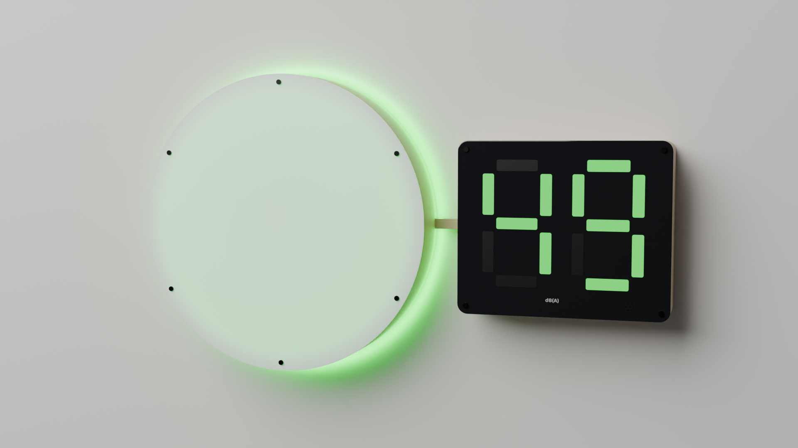
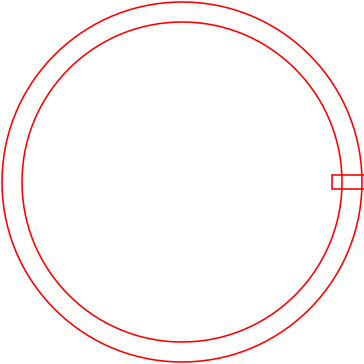
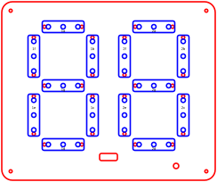
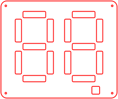
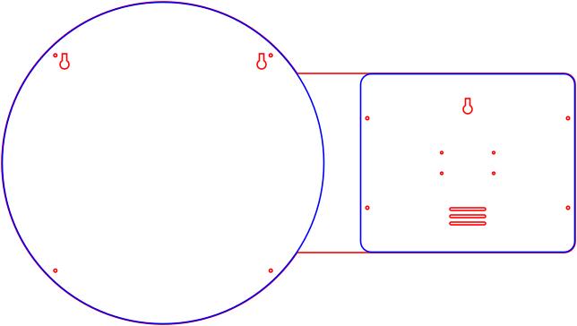

Lärmampel
Eine Lärmampel für Klassenräume und Lernorte, selbst gebaut im Makerspace: Sie misst den Schallpegel, zeigt ihn als Farbe und in dB(A) und protokolliert die Werte im Netz.

So sieht sie aus
Rendering der Bauform „Farbkreis + Display“ in den drei Ampelstufen. Maße wie in den Lasercut-Vorlagen: Farbkreis Ø 360 mm, Displaykasten 240 × 200 mm.


Zwei Bauformen
Farbkreis + Display
Eine runde Leuchtfläche in der Ampelfarbe, indirekt beleuchtet von 60 LEDs, daneben ein Displaykasten mit zwei 7-Segment-Ziffern hinter Rauchglas. 102 LEDs, Gehäuse aus gelasertem Pappelsperrholz.
Gehäuse und BauTacho-Scheibe
Eine runde Scheibe mit 45-LED-Bogen über 270 Grad, der mit dem Pegel von Grün über Gelb nach Rot wandert, und großen Ziffern in der Mitte. 87 LEDs.
VisualisierungTechnik
Messen
MEMS-Mikrofon INMP441 über I2S. Nutzbar ca. 40-115 dB(A), nach Kalibrierung etwa ±1-2 dB - genug für eine Ampel, aber keine geeichte Messung.
Anzeigen
WS2812B-LEDs an einer Datenleitung, Farbe mit Hysterese und Haltezeit, Spitzenwert, Warnung bei Dauer-Rot.
Speichern
Raspberry Pi Zero 2 W: Leq, Lmax und L90 pro Minute in SQLite, nächtliche Sicherung auf NAS oder Server, Weboberfläche.
Datenschutz
Es werden nur Pegelwerte berechnet und gespeichert, niemals Audio.
Ausprobieren im Simulator
Der Simulator im Browser zeigt beide Bauformen mit derselben Logik, die die Firmware bekommen soll. Klassenraum simulieren, Schieberegler oder das eigene Mikrofon, Schwellen und Zeitkonstanten einstellen, LED-Strom ablesen.
Simulator öffnenIn fünf Schritten zur Lärmampel
- 1Teile besorgen
Pi Zero 2 W, Mikrofon INMP441, WS2812B-Streifen, Netzteil, Sperrholz und Acryl.
- 2Gehäuse lasern
15 Vorlagen für Farbkreis und Displaykasten, parametrisch erzeugt.
- 3Elektronik verdrahten
Eine Datenleitung für alle 102 LEDs, Pegelwandler, Absicherung.
- 4Kalibrieren
Einmal gegen einen Schallpegelmesser abgleichen, Offset eintragen.
- 5Aufhängen
Zwei Schlüssellöcher, ein Netzteil, Daten per WLAN.
Lasercut-Vorlagen
Rot = schneiden, Blau = ritzen, Schwarz = gravieren. Erzeugt von
laser/generate_laser.py, alle Maße zentral änderbar.








Downloads
- Lasercut-Vorlagen (ZIP) 15 SVGs + Generator-Skript
- Blender-Szene (.blend) Farbkreis + Display, Blender 5
- Render-Skript erzeugt die Szene aus den Maßen
- Dokumente als Markdown Teileliste, Schaltung, Gehäuse, Tacho-Variante